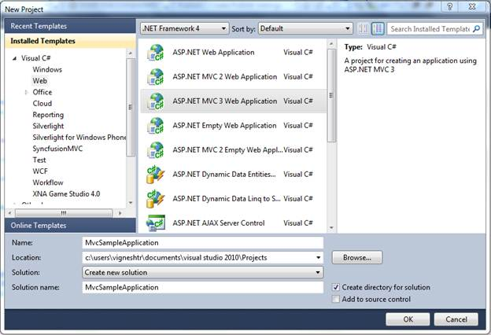
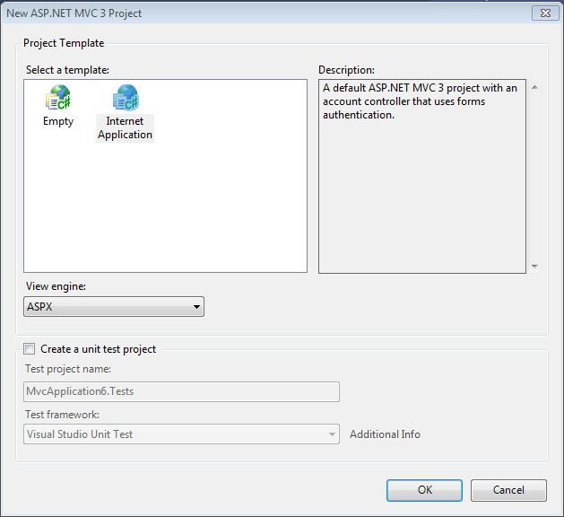
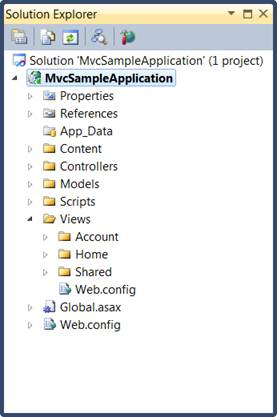
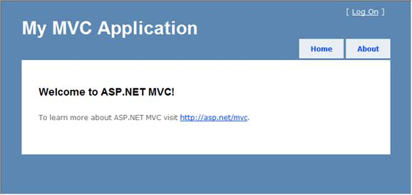

To create a platform application:
1. Create a new ASP.NET MVC project.
2. On the File menu, select New Project. The New Project dialog box is displayed:

Figure 8: New Project Dialog Box
3. On the upper-right corner, select .NET Framework 4.0.
4. In Project types, expand either Visual Basic or Visual C#, and then click Web.
5. In Visual Studio Installed Templates, select ASP.NET MVC 3 Web Application.
6. In the Name field, enter MvcSampleApplication.
7. In the Location field, enter a name for the project folder.
8. If you want the name of the solution to differ from the project name, enter a name in the Solution Name field.
9. Select Create directory for solution.
10. Click OK.
The New ASP.NET MVC 3 Project dialog box is displayed.

Figure 9: New ASP.NET MVC3 Dialog Box
11. Select Internet Application and then select ASPX from the View engine drop-down.
12. Click OK.
The new MVC3 application project is generated.
The following illustration shows the folder structure of a newly created MVC solution.

Figure 10: Solution Explorer
The folder structure of an MVC project differs from that of an ASP.NET Web site project. The MVC project contains the following folders:
• Content—It is for content support files. This folder contains the cascading style sheet (.css file) for the application.
• Controllers—It is for controller files. This folder contains the application's sample controllers, which are named AccountController and HomeController. The AccountController class contains login logic for the application. The HomeController class contains logic that is called by default when the application starts.
• Models—It is for data model files such as LINQ-to-SQL, .dbml files, or data entity files.
• Scripts—It is for script files, such as those that support ASP.NET AJAX and jQuery.
• Views—It is for view page files. This folder contains three subfolders, namely Account, Home, and Shared. The Account folder contains views that are used as UI for logging in and changing passwords. The Home folder contains an Index view (the default starting page for the application) and an About page view. The Shared folder contains the master-page view for the application.
The newly generated MVC project is a complete application that you can compile and run without any change. The following illustration shows what the application looks like when it runs in a browser.

Figure 11: MVC Application Output